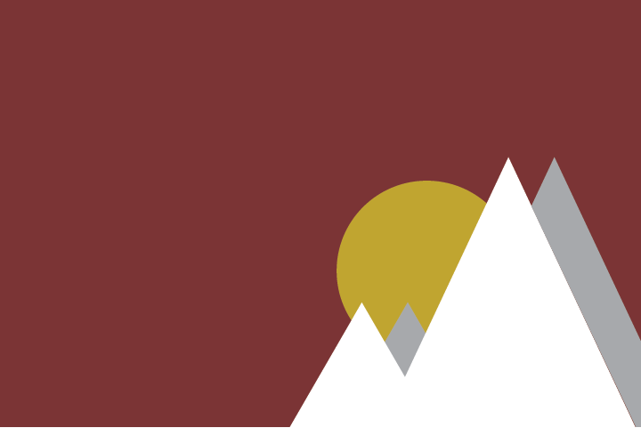
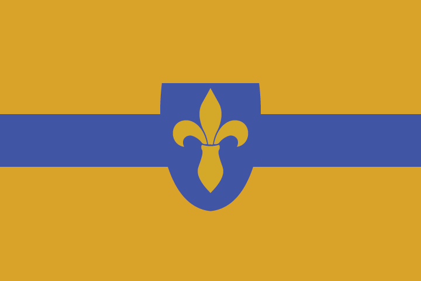
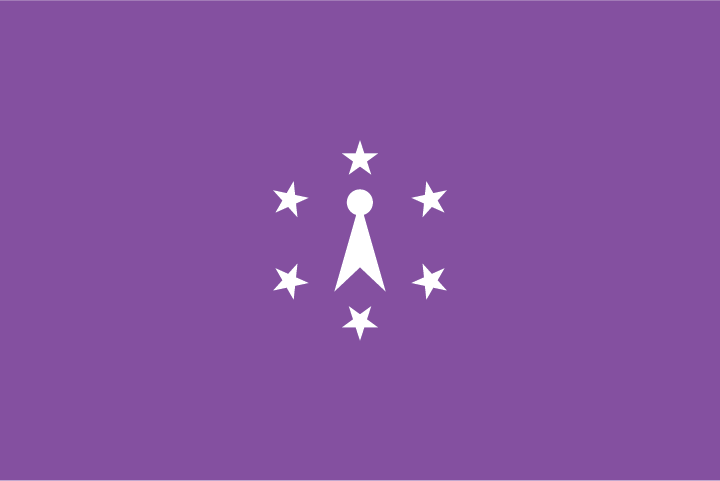
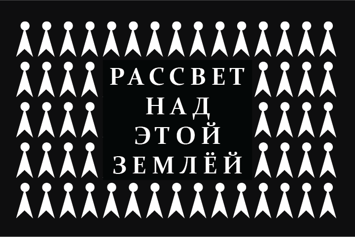
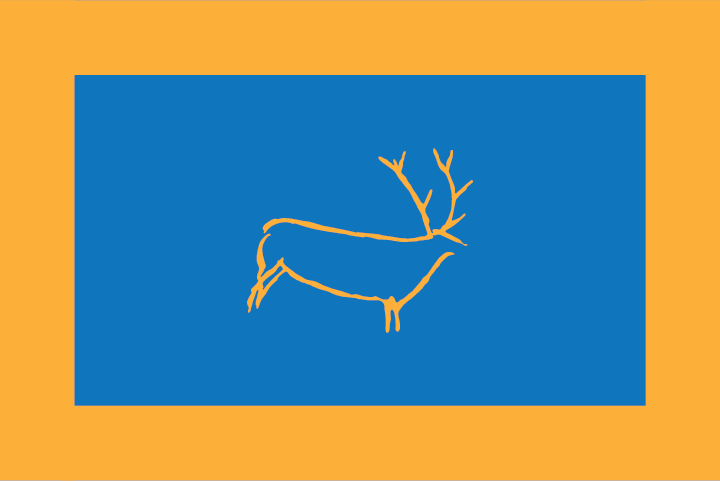

The Helmsman, flag of the Most Serene Republic of Bergia. The blue symbolizes the Great Bergian Sea, the wheel is a ship's helm.
The Helmsman, flag of the Most Serene Republic of Bergia. The blue symbolizes the Great Bergian Sea, the wheel is a ship's helm.

The Red Sky, flag of the Republic of Montagna. Red for the high amounts of copper in the land, the sun rises for a new dawn, mountains represent the country's geography

The White Nunón, flag of Her Majesty's Mancomunidad. The épée-de-lis is the symbol for the Nunón dynasty. The white represents purity.

The Yellow Nunón, flag of the Mancomunitas Colony. The yellow represents sand, the blue represents the river Mon.

Purple John, flag of the Commonwealth of Bytar. The six stars represent the six states that made up Bytar, the "pointed man" is an old symbol of the Bytars, and purple represents the almost-royalty status that the ruling oligarchy has. Oligarchic (government) faction of the civil war.

Black John, flag of the State of Bytar. The black represents struggle. The Bytari text translates to "The Sun Rises Upon This Land." Theocratic faction of the civil war.
Humble John, flag of the Peasant Struggle Union (or the Northern Guerillas). The red represents the blood shed by the workers. The pointed man has been given a sickle to represent the struggle for peasant liberation. Communist faction of the civil war.

Bull in Yellow, flag of the Free City of König. Blue for the sky, yellow for the city's walls. The Bull is a pre-historic symbol of the region.